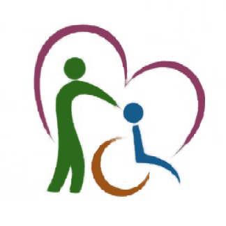

<nav id="main-navbar" class="navbar-fixed-top">
	<!-- <div class="background-image" style="  position: fixed;
	  left: 0;
	  right: 0;
	  z-index: 1;

	  display: block;
	  background-image: url('img/white.png');
	  width: 100%;
	  height: 50px;

	  -webkit-filter: blur(5px);
	  -moz-filter: blur(5px);
	  -o-filter: blur(5px);
	  -ms-filter: blur(5px);
	  filter: blur(5px);"></div> -->
	<div class="container">
		<div class="navbar-header">
			<!-- Logo -->
			<div class="navbar-brand">
				<a class="logo" href="index.html">LAXMI NARAYAN TRUST</a>
			</div>
			<!-- Logo -->

			<!-- Mobile toggle -->
			<button class="navbar-toggle-btn">
					<i class="fa fa-bars"></i>
				</button>
			<!-- Mobile toggle -->

			<!-- Mobile Search toggle -->
			<button class="search-toggle-btn">
					<i class="fa fa-search"></i>
				</button>
			<!-- Mobile Search toggle -->
		</div>

		<!-- Search -->
		<div class="navbar-search">
			<button class="search-btn"><i class="fa fa-search"></i></button>
			<div class="search-form">
				<form>
					<input class="input" type="text" name="search" placeholder="Search">
				</form>
			</div>
		</div>
		<!-- Search -->

		<!-- Nav menu -->
		<ul class="navbar-menu nav navbar-nav navbar-right">
			<li><a href="index.html">Home</a></li>
			<li><a href="about-page.html">About</a></li>
			<li><a href="causes-page.html">Causes</a></li>
			<li><a href="events-page.html">Events</a></li>
			<li class="has-dropdown"><a href="blog-page.html">Blog</a>
				<ul class="dropdown">
					<li><a href="blog-page.html">Activity</a></li>
					<li><a href="blog-page.html">Posts</a></li>
				</ul>
			</li>
			<li style="margin-top: .4em;margin-bottom: .4em;"><a class="primary-button" href="donate-page.html" style="padding: 15px">Donate</a></li>
		</ul>
		<!-- Nav menu -->
	</div>
</nav>